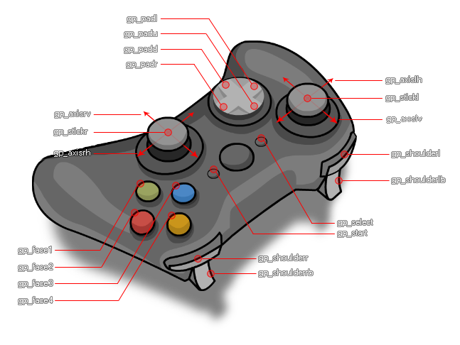

GameMaker Studio 2 verfügt über eine Reihe dedizierter Funktionen, mit denen sowohl analoge als auch digitale Steuerelemente von mehreren verbundenen Game-Pads erkannt werden können. Diese Funktionen funktionieren ähnlich wie die Geräteeingänge, da Sie bis zu vier verschiedene XInput-Gamepads erkennen können, die verbunden sind (und bis zu 8 DirectInput-Gamepads), und die Eingaben von jedem mit den gleichen Funktionen bearbeiten können. Beachten Sie, dass wenn ein Gamepad an Ihr Gerät angeschlossen wird (oder es entfernt wird), ein asynchrones Systemereignis ausgelöst wird, bei dem Sie die Situation mit den entsprechenden Funktionen behandeln können.
Die Gamepads "Slots" werden von 0 mit den Slots 0 - 3 inklusive indiziert, nur für Xinput Gamepads, also: Xbox360 Controller und Kompatible. Sie können jedoch auch die Steckplätze 4 bis einschließlich 11 für DirectInput-Gamepads überprüfen, was bedeutet, dass Sie viele andere Controller-Modelle erkennen können, wenn Sie über diese Steckplätze verbunden sind. Es ist erwähnenswert, dass bei der Verwendung von DirectInput-Gamepads die unten angegebenen Konstanten möglicherweise nicht genau mit den Schaltflächen übereinstimmen, die Sie beim Drücken erwarten, aufgrund der fragmentierten und nicht standardisierten Art, wie die API von Controller-Herstellern implementiert wird. Es wird empfohlen, dass Sie in Ihren Spielen eine Art Gamepad-Setup-Bildschirm haben, in dem die Gamepad-Schaltflächen basierend auf Eingaben von jedem angeschlossenen Gerät neu definiert werden können, um Probleme zu vermeiden. Beachten Sie auch, dass die Direct Input-Schnittstelle im kooperativen Modus ausgeführt wird. Dies bedeutet, dass Ihr Spiel nur Zugriff auf die Vordergrundanwendung hat, was dazu führt, dass Direct Input-Controller "verloren" sind, wenn das Spiel den Fokus verwendet und dann "gefunden" wieder wenn es wieder in den Fokus kommt (dies kann im System Event erkannt und behoben werden).
Wenn Sie mit den Gamepad-Funktionen arbeiten, gibt es eine Reihe von eingebauten Konstanten, die verwendet werden sollten, um Schaltflächen und Stickachsen usw. zu erhalten / definieren:
| Konstante | Beschreibung |
|---|---|
| gp_face1 | Obere Taste 1 (dies entspricht dem "A" auf einem Xbox 360-Controller und dem Kreuz auf einem PS-Controller) |
| gp_face2 | Obere Taste 2 (dies entspricht dem "B" auf einem Xbox 360-Controller und dem Kreis auf einem PS-Controller) |
| gp_face3 | Obere Taste 3 (dies entspricht dem "X" auf einem Xbox 360-Controller und dem Quadrat auf einem PS-Controller) |
| gp_face4 | Obere Taste 4 (dies entspricht dem "Y" auf einem Xbox 360-Controller und dem Dreieck auf einem PS-Controller) |
| gp_shoulderl | Linke Schultertaste |
| gp_shoulderlb | Linke Schulter auslösen |
| gp_shoulderr | Rechte Schultertaste |
| gp_shoulderrb | Abzug der rechten Schulter |
| gp_select | Die Auswahltaste (dies ist ein Touch-Pad drücken auf einem PS4-Controller) |
| gp_start | Der Startknopf (dies ist die "Optionen" Taste auf einem PS4 Controller) |
| gp_stickl | Der linke Stick drückte (als Knopf) |
| gp_stickr | Der rechte Stick drückte (als Knopf) |
| gp_padu | D-Pad auf |
| gp_padd | D-Pad nach unten |
| gp_padl | D-Pad links |
| gp_padr | D-Pad rechts |
| gp_axislh | Linke Steuerknüppel horizontale Achse (analog) |
| gp_axislv | Linke Steuerknüppel-Vertikalachse (analog) |
| gp_axisrh | Rechter Steuerknüppel horizontale Achse (analog) |
| gp_axisrv | Rechter Stab vertikale Achse (analog) |
Um besser zu verstehen, welcher Teil des Controllers jede Konstante darstellt, können Sie das folgende Bild eines Standard-Gamepads verwenden: 
Im Folgenden finden Sie eine Liste aller Gamepad-Funktionen:
- gamepad_is_supported
- Gamepad_get_device_count
- gamepad_is_connected
- gamepad_get_description
- gamepad_get_button_threshold
- gamepad_set_button_threshold
- gamepad_axis_count
- gamepad_axis_value
- gamepad_button_check
- gamepad_button_check_pressed
- gamepad_button_check_released
- gamepad_button_count
- Gamepad_Button_Wert
- Gamepad_set_vibration
- gamepad_set_axis_deadzone
- gamepad_set_colour
Die folgende Liste zeigt die aktuelle Kompatibilität zwischen den Plattformen (beachten Sie, dass sich dies mit zukünftigen Updates ändert):
sudo apt-get install jstest-gtk
sudo apt-get install joystick.
Dies wird GUI-Unterstützung für den Joystick / Gamepad sowie die Joystick / Gamepad-API selbst installieren.
Im Idealfall möchten Sie auf allen Zielplattformen eine Liste verfügbarer Gamepad- "Slots" auflisten und sie dann prüfen, um festzustellen, ob irgendwelche Geräte gefunden wurden, etwa so:
var maxpads = gamepad_get_device_count();for
(var i = 0; i < maxpads; i++)
{
if (gamepad_is_connected(i))
{
// do stuff with
pad "i"
}
}